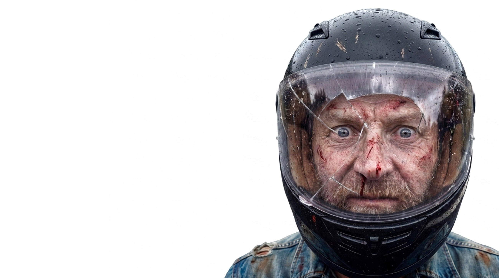
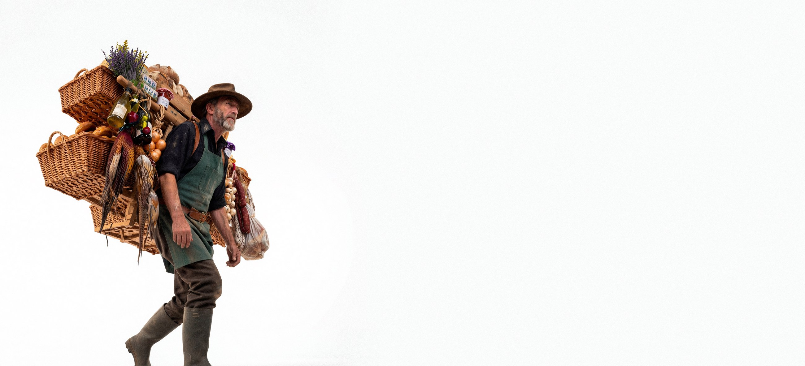
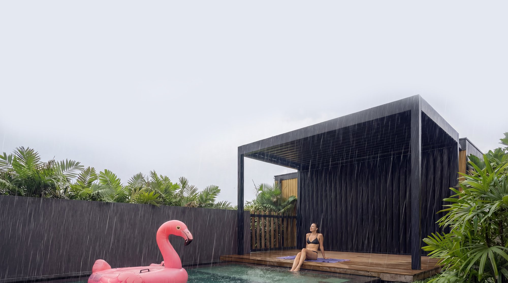
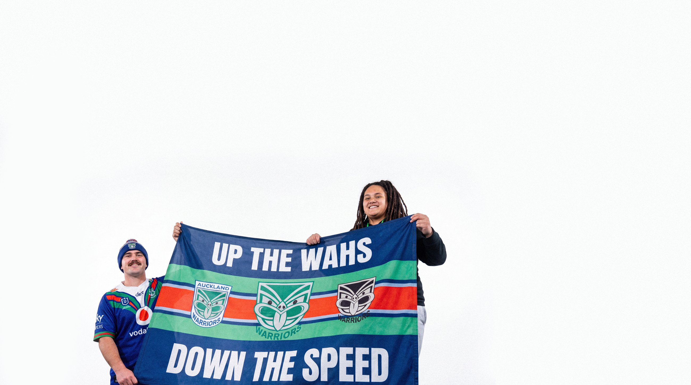
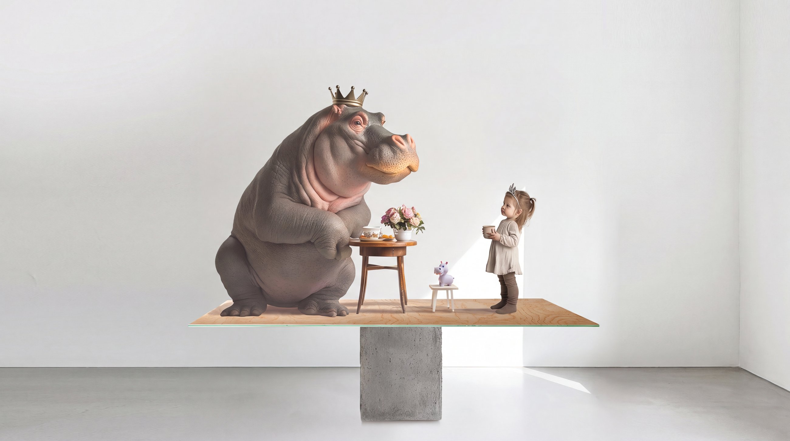

Riders aged 40–59 account for 55% of fatal motorcycle crashes. We built a campaign that put the stat in front of the riders it's about — film, web and social for RIDEtoSURVIVE.CO.NZ.

An importer of Europe's finest, built on one idea: they search the corners of the world so the best of it ends up on yours. We shaped that obsession into a brand, identity, voice and digital.
OH2 is Ben Handy & John O'Leary. We think of ourselves as creative business people. We explore perspectives, define new possibilities, find the missing and make it unmissable.

Taking the inside out. Brand, campaign and film for Exo Louvres — the outdoor room specialists.

Big hits belong on the field. A road-speed campaign with the NZ Warriors — for the ones waiting at home.
IDENTITY / STRATEGY / BUSINESS CULTURE
CONCEPT TO EXECUTION
FILM / MOTION DESIGN / AUDIO / AI
WEBSITES / GRAPHIC / VISUAL SYSTEMS
SOCIAL / DIGITAL MARKETING / INTERNAL COMMS

Timber that outbuilds expectation. Brand, campaign and film for NZ Wood.